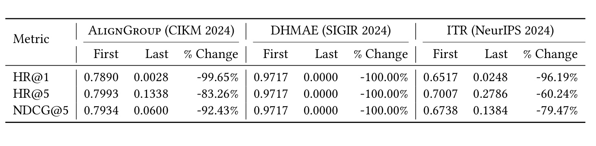
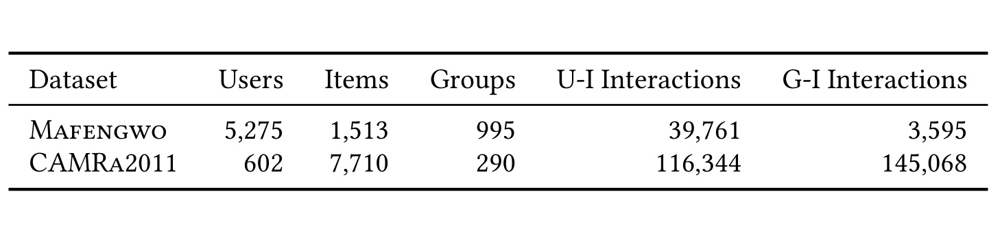
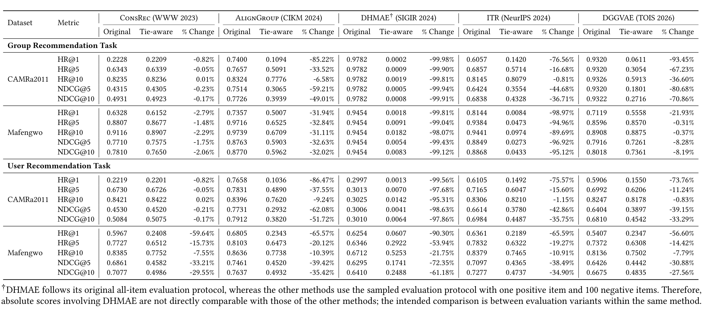
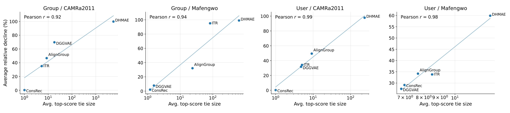
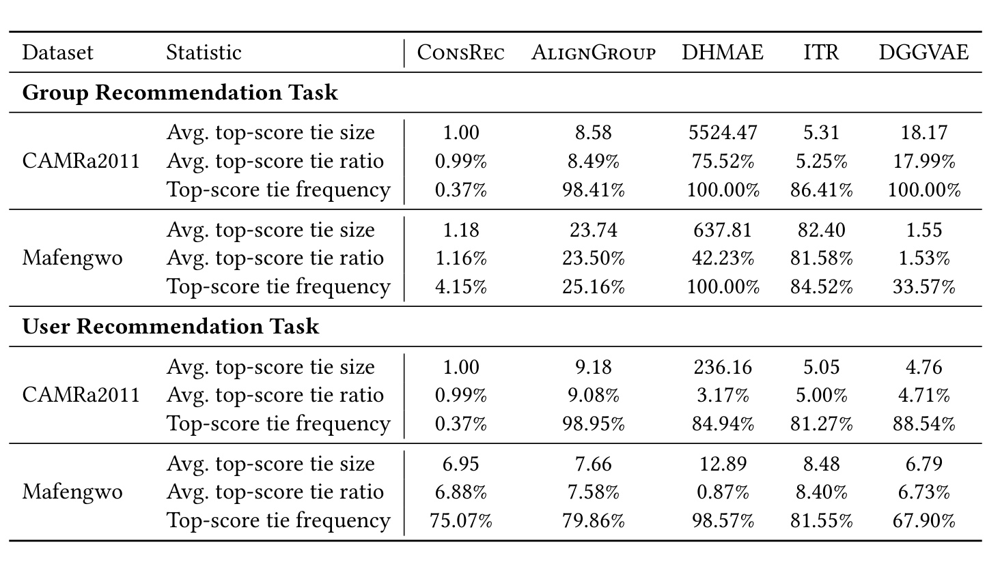
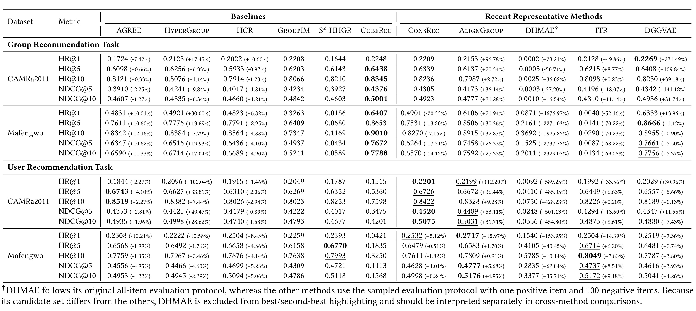
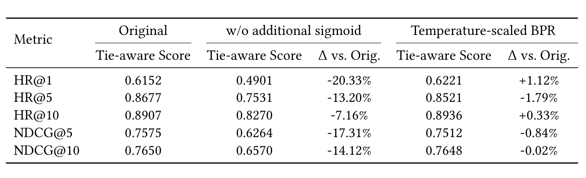
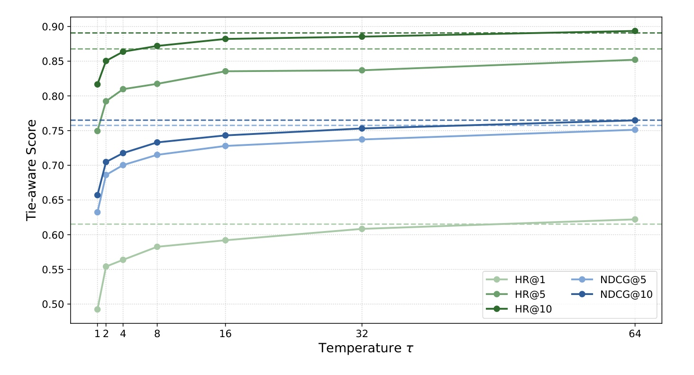

Tie-Aware Group Recommendation Evaluation：并列分数如何制造群组推荐“进步”幻觉
《Are We Really Making Progress in Group Recommendation? Unmasking the Tie-Breaking Illusion》由台湾大学的 Song-Duo Ma 与 Pu-Jen Cheng 完成，一作主机构为台湾大学。论文于 2026 年 8 月 11 日提交，已被 RecSys 2026 接收。它不再提一个更复杂的群体偏好聚合器，而是对近年群组推荐的训练与评测代码做受控审计：额外的 sigmoid 如何压缩分数，确定性排序又如何借助候选顺序偏爱正样本。唯一论文入口为 arXiv:2608.11190；作者已公开复现与 tie-aware 评测代码，其中包含两个数据集、代表方法补丁、精确期望评测器与恢复原 sigmoid 的对照开关。
近年群组推荐在标准基准上的强劲增益，不一定都来自更准确的群体偏好建模：训练时的分数压缩会制造大量顶分并列，而评测时的确定性打破并列又可把 HR@K 与 NDCG@K 变成候选列表顺序和排序实现的产物。
1. 背景和问题
群组推荐要为一群人排序一组共同候选项，例如朋友共同选旅行地，或家庭成员共同选电影。个体偏好可能冲突，因此 ConsRec、AlignGroup、DHMAE、ITR 与 DGGVAE 等工作通过共识建模、成员对齐、超图结构或潜变量来学习群体表示。但“方法更复杂”与“排序真的更好”之间还隔着评测协议。如果协议不稳定，新模型领先的小数点可能只是代码细节。
论文针对的是单正样本 top-K 评测。每个测试实例含一个 held-out 正样本和一组负样本，模型对所有候选项打分，只要正样本排进前 $K$ 就计入 HR@K，NDCG@K 再按位置给折损。当所有分数不同时，正样本排名唯一；一旦正样本和若干负样本同分，模型本身就没有产生唯一次序。此时，数组初始顺序、稳定排序与二级 key 会决定正样本落在并列块的头部还是尾部。
这个问题在 HR@1 上最尖锐：顶分块中只有一个位置能得分，一个大小为 $b$ 的并列块若没有业务二级信号，正样本的合理期望命中率只是 $1/b$，而“正样本恭好先入数组”可把它固定写成 1。对 HR@5 和 HR@10，风险取决于 cutoff 是否切过并列块；对 NDCG，即便块全在 cutoff 内，块内前后位置仍会改变对数折损。因而“我们一直用同一排序库”不能保证公平；它只保证偏差可重复，没有证明偏差测到了模型能力。
被审计的代码库恰好使用了有利顺序：先把 held-out 正样本放在候选列表第一个，再追加采样负例，最后用 NumPy 默认 argsort 排分数。当正样本与负样本同分时，实现倾向于给正样本并列块中最靠前的可行位置。这并非模型识别出正样本，而是测试数据构造泄漏给了 tie-breaker。作者设计 First 和 Last 两个诊断规则，分别把正样本放到并列块首位与末位，其他条件完全不变。
这个诊断的数值是整篇论文最具冲击力的问题证据：模型、参数、分数和候选集全都不变，只改正样本在并列块内的位置。AlignGroup 的 HR@1 从 0.7890 降至 0.0028，降幅 99.65%；DHMAE 的 HR@1、HR@5 和 NDCG@5 几乎都从 0.9717 归零；ITR 的 HR@1 从 0.6517 降到 0.0248，NDCG@5 从 0.6738 降到 0.1384。这不是普通随机种子波动，而是同一分数向量上两种合法次序产生的冲突结论。当一个工作的宏观“进步”能被这种微观实现彻底反转时，先问评测是否唯一，比继续比较模型结构更重要。
并列的直接来源是一个看似无害的训练改动。标准 BPR 已经对“正分减负分”这个 margin 施加 sigmoid；多个近年实现却在求 margin 之前，先对两个 item score 分别做一次 sigmoid。单调性只保证精确算术里次序不变，不保证 FP32 里每个数仍可分：原始分数进入 sigmoid 饱和区后，多个不同输入可被舍入为完全相同的浮点值。因此，论文揭示的因果链是“item-wise sigmoid 压缩→有限精度下顶分合并→候选顺序决定并列次序→top-K 指标虚高”。这也是一个对量化排序、低精度推理与分布式 top-K 同样有用的检查框架。
论文还把“模型排序错”与“模型没有排序”区分开。前者意味着负样本分数严格高于正样本，是建模失败；后者意味着分数只确定了一个并列块，块内次序是未识别的。把未识别的次序硬写成最优次序，等于为模型补了一个它没有产生的信号。这也解释了为什么精确期望比“统一换成另一个确定性规则”更合适：后者只是换一个偏好，前者才是对分数未表达的次序做边缘化。
2. 方法
2.1 从标准 top-K 与 BPR 到 sigmoid-before-BPR
设测试实例 $x$ 对应候选集 $\mathcal{I}_x$，模型给物品 $i$ 的分数为 $\hat y_{x,i}$，hed-out 正样本的排名为 $r_x$。单正样本时，实例级 HR 和 NDCG 可写成： 符号解释：$\mathbb{I}[\cdot]$ 是示性函数，$K$ 是截断位置。正样本排名不大于 $K$ 时记 1，否则记 0。这个离散跳变解释了为什么并列块跨过 $K$ 时特别危险。
符号解释：由于只有一个正样本，其 gain 为 1，分母按排名作对数折损。即使并列块完全位于 top-K 内，HR 不变，NDCG 仍会因正样本在块内前后移动而变化。
标准 BPR 对正负样本的原始分数差建模： 符号解释：$i^+$ 是已观测正样本，$i^-$ 是采样负样本，$s$ 是模型输出的未约束实数分数。损失只关心 margin，鼓励 $s_{x,i^+}>s_{x,i^-}$；此处的 sigmoid 是对分数差做链接，不需要先把每个 item score 压到 $(0,1)$。
被审计实现先定义： 符号解释：$\tilde{s}_{x,i}$ 是单个 item 的有界变换分数。然后才在变换分数之间求 margin： 符号解释：外层 sigmoid 是 BPR 对 margin 的标准链接，两个内层 sigmoid 是额外 item-wise 变换。因为内层输出只在 $(0,1)$，有效 margin 被强制收缩；原始分数越深入饱和区，导数越小，两个原本可分的物品越容易在 FP32 下得到同一变换值。这一变换在训练时发生，但它改变了模型学到的分数几何，所以危险会留到推理与评测。
2.2 并列块上的 HR/NDCG 精确期望
为了描述顶部压缩，先定义实例 $x$ 的顶分物品集与其大小： 符号解释：$\mathcal{T}_x$ 收集分数精确等于当前最大值的候选项，$m_x$ 是顶分并列大小。论文不用数值容差，而是对 FP32 PyTorch 分数转 NumPy 后的精确相等做统计。$\mathbb{E}[m_x]$、$\mathbb{E}[m_x/|\mathcal{I}_x|]$ 和 $\Pr(m_x>1)$ 分别描述并列块绝对尺寸、候选占比与出现频率。
评测正样本时，真正需要的不只是顶分块，而是“包含正样本的并列块”。作者计算： 符号解释：$a_x$ 是严格高于正样本的候选数，$b_x$ 是与正样本同分的并列块大小，包含正样本自身。于是正样本所有可行排名恰好是： 符号解释：均匀随机打破并列时，正样本以 $1/b_x$ 的概率落在块内每个位置。这里不需要反复洗牌或蒙特卡罗采样：因为可行排名是已知有限集，指标期望能直接精确求出。
对 HR@K，并列块中不超过 $K$ 的可行位置数除以块大小，即： 符号解释：若整个并列块在 top-K 之后，分子为 0；若整块在 top-K 内，分子为 $b_x$；若 $K$ 切过并列块，分子就是块内被 top-K 覆盖的位置数。所得分数是正样本随机排进 top-K 的精确概率，而不是任选首位或末位。
对 NDCG@K，每个可行排名的折损不同，需逐位平均： 符号解释：求和遍历正样本的全部可行排名；超过 $K$ 的位置贡献 0，位于 top-K 的位置按 $\log_2(r+1)$ 折损。这一定义同时处理“是否进入 top-K”与“在 top-K 中多靠前”两层不确定性。当 $b_x=1$ 时，两个 tie-aware 公式自然退化为标准指标，不会惩罚没有并列的模型。
数据集级分数再对实例期望求平均： 符号解释：$\mathcal{X}_{\mathrm{test}}$ 是全部测试实例。先对每个实例的并列不确定性精确边缘化，再宏平均，使结果不依赖某次随机洗牌或某个排序库的稳定性。这个 evaluator 的核心不是强制业务必须随机打破并列，而是在模型分数无法决定唯一排名时，给出与候选原始顺序无关的参考口径。
2.3 同一分数快照的受控重评估
作者的实验设计特意把训练差异与评测差异分开。每个随机种子、检查点和测试实例只计算一次 FP32 候选分数，然后复用同一分数向量得到两份结果：原代码库的确定性排序，以及并列块上的精确期望。这样，两者差值只能来自 evaluator，不会被重训练波动混入。主结果再对三个随机种子求平均。

Table 1 是这个受控评测方法的最小实例，不是一张重训练后的模型对比表。First 和 Last 都接收完全相同的候选分数：First 把 held-out 正样本放在其同分块中第一个可行位置，Last 则放在最后一个可行位置。AlignGroup 的 HR@1 因此从 0.7890 变为 0.0028，DHMAE 的 HR@1 从 0.9717 变为 0，ITR 的 HR@1 从 0.6517 变为 0.0248；HR@5 与 NDCG@5 也出现 60.24%至100% 的降幅。由于唯一操作变量是并列块内位置，这张表把“模型真实排序能力”和“确定性 tie-breaker 选中的某个可行排名”分离开。完整 tie-aware evaluator 随后不选 First 或 Last 任一极端，而是对二者之间的全部可行排名求精确期望；这正是从诊断实验过渡到正式协议的方法逻辑。
该设计保留每个方法原评测难度：ConsRec、AlignGroup、ITR 和 DGGVAE 使用一个正样本加 100 个采样负样本，DHMAE 则继续在全部物品上排序。因此 DHMAE 的绝对分数不能与其他方法直接比高低，但“同一 DHMAE 分数在原协议与 tie-aware 协议下差多少”仍是受控比较。论文还重训所有模型，不是只在作者提供的某个有利检查点上重排。
2.4 用 temperature-scaled BPR 拆分平滑收益与分数畸变
直接删掉额外 sigmoid 能减少并列，却不一定提高 tie-aware 指标。这说明错误实现可能同时携带了一个真实优化效应：item-wise sigmoid 把 margin 压到有界范围，降低大 margin 对 BPR 的尺度影响，类似隐式 margin smoothing。问题不是“平滑必然有害”，而是平滑与推理分数饱和被绑定在一起。
论文将温度直接放入原始 margin 的 BPR 损失： 符号解释：$\tau$ 是训练温度，它把原始正负 margin 缩小后再进入 sigmoid，从而软化 pairwise 学习信号；与双内层 sigmoid 不同，它不先压扁两个 item score。训练后评测直接排原始模型分数，温度不是一个服务时再次施加的 squashing 层。作者扫描 $\tau\in\{1,2,4,8,16,32,64\}$ 用来诊断“平滑强度—性能恢复”关系，并明确说明这不是在测试集上选最优温度的常规调参。
3. 实验结果
3.1 两个数据集、两种任务与五个近期方法
实证覆盖 CAMRa2011 和 Mafengwo，并分别测试 group recommendation 与 user recommendation。前者检查群体表示排序，后者检查同一家族方法中的个人用户排序；把两种任务放在一起，可以判断偏差是否只来自群内聚合器。五个代表性近期方法是 ConsRec、AlignGroup、DHMAE、ITR 和 DGGVAE，后续“删除额外 sigmoid”的重评估还纳入 ConsRec 代码库的 AGREE、HyperGroup、HCR、GroupIM、S2-HHGR 与 CubeRec 等 baseline。

Table 2 表明两个基准并非仅是同规模复制。Mafengwo 有 5,275 个用户、1,513 个物品、995 个群组，用户—物品互动 39,761 条，群组—物品互动仅 3,595 条；CAMRa2011 只有 602 个用户和 290 个群组，却有 7,710 个物品、116,344 条用户互动与 145,068 条群组互动。一个是用户/群数更多但群互动稀疏，另一个是物品空间大、群互动密集。并列偏差在两个数据集都出现，意味着它不依赖单一稀疏度环境；但各方法的并列块大小不同，也提醒我们不能用一个数据集的降幅替代另一个。
论文尽量保留每个原代码库的训练/测试划分和候选集规则，重训模型后对同一分数同时跑原始与 tie-aware 指标。主表是三种子平均。分析时要遵守一条重要边界：DHMAE 是 all-item 排序，其他四个近期方法是 101 候选采样评测，所以不能说“DHMAE 绝对分数低于某方法”就代表架构差。本文最稳健的问题是：同一方法在同一候选协议下，去除有利的 deterministic tie-breaking 后会掉多少。
3.2 原协议到 tie-aware：幅度足以改变方法排序

Table 3 展示的不是统一小幅回调，而是高度方法相关的重估。在 CAMRa2011 群组任务上，ConsRec 的 HR@1 仅从 0.2228 变为 0.2209，其他指标也几乎不变；但 AlignGroup HR@1 从 0.7400 降至 0.1094，DHMAE 从 0.9782 降至 0.0002，ITR 从 0.6057 降至 0.1420，DGGVAE 从 0.9320 降至 0.0611。对 NDCG@5，后四者的降幅分别是 59.21%、99.94%、44.68% 与 80.68%。这种差异足以把“近期方法遥遥领先”改写为“多个方法的有效排序信息很弱”。
Mafengwo 群组任务的方法轮廓又不同。ConsRec HR@1 从 0.6328 降至 0.6152，DGGVAE 从 0.7119 降至 0.5558，但 AlignGroup 从 0.7357 降至 0.5007，DHMAE 从 0.9454 降至 0.0018，ITR 从 0.8144 降至 0.0084。用户任务也没有让问题消失：CAMRa2011 上 AlignGroup、DHMAE、ITR 和 DGGVAE 的 HR@1 分别下降 86.47%、99.56%、75.57% 与 73.76%；Mafengwo 用户任务上，五个方法的 HR@1 降幅均在 56.60% 至 90.30% 之间。因而偏差既非单一数据集专属，也非只在群聚合分支上发生。
这张表还提供一个重要反例：ConsRec 并非一直虚高，在 CAMRa2011 的两种任务上它几乎不受影响。所以论文并没有宣布“所有使用 BPR 的方法都无效”，而是将评测风险与真实并列统计绑定。方法是否受影响，要看具体 scorer、数据分布、候选规模与浮点饱和，不能只看论文年份或架构名字。
3.3 并列严重度与指标虚高的定量关系

Figure 1 将每个方法在某个任务—数据集组合中化成一个点：横轴是对数尺度下的平均顶分并列大小，纵轴是五个指标从原协议转向 tie-aware 后的平均相对降幅。四个面板的 Pearson 相关系数分别为 0.92、0.94、0.99 与 0.98。例如 CAMRa2011 群组任务中 ConsRec 位于左下角，并列块接近 1，指标几乎不掉；DHMAE 位于右上角，并列块跨越几个数量级，平均降幅接近 100%。图中四个环境都呈现相同方向，这比只列三个夸张案例更能支持“并列是偏差机制”，而不是偶然的复现失败。
不过，相关图仍不是完整因果证明。每个面板只有五个方法点，并且降幅由五个相关 top-K 指标平均而成。更强的因果证据来自前面的“同分数只换 evaluator”，该图的作用是检查影响大小是否与机制足迹同步。从工程审计角度，这意味着先导出 tie size 与 metric delta 的联合图，再决定是否重跑全套模型，会比一开始就去调新架构更高效。

Table 4 解释了为什么只报“有无并列”不够。CAMRa2011 群组任务中，ConsRec 平均顶分并列大小为 1.00，频率仅 0.37%；AlignGroup 平均块大小 8.58、频率 98.41%；DGGVAE 块大小 18.17、频率 100%；DHMAE 则达到 5,524.47，顶分块占候选集 75.52%，且每个实例都有并列。Mafengwo 群组任务中，ITR 平均块大小为 82.40、占比 81.58%，与其 HR@1 几乎归零相呼应。
频率、大小与占比各回答不同问题。DHMAE 在 Mafengwo 用户任务上顶分并列频率是 98.57%，但平均占比只有 0.87%，因为它的 all-item 候选集远大于采样的 101 项；在小 $K$ 下，一个占比不高但必然出现的顶分块，仍可以剧烈改变 HR@1。反过来，DGGVAE 在 Mafengwo 群组任务上平均块大小仅 1.55，但频率 33.57%，因此它仍在 HR@1 有 21.93% 降幅。对线上排序系统，三个统计最好和分位数、分数精度及 cutoff 一起报，否则会把大块低频与小块高频混为同一风险。
3.4 去掉额外 sigmoid 后的多方法排位

Table 5 不只是把旧分数减去偏差，而是修改训练实现、重训三个随机种子，再用 tie-aware evaluator 评估。受影响的方法包括 AlignGroup、DHMAE、ITR、DGGVAE，以及 baseline 中的 AGREE、HyperGroup 和 HCR；其他 baseline 没有额外 sigmoid，所以保持不变。CAMRa2011 的 ConsRec 也保持不变，因为该设定的原论文用 dot-product scorer，而非带该改动的 MLP 变体。
修正后，大部分受影响方法的 tie-aware 分数明显恢复，说明分数压缩确实是主要问题。例如 CAMRa2011 群组 HR@1 中，AlignGroup 从原 tie-aware 值提升 96.78% 到 0.2153，DGGVAE 提升 271.49% 到 0.2269；Mafengwo 群组 HR@1 中，AlignGroup 达 0.6106，DGGVAE 达 0.6333，DHMAE 虽然相对增幅高达 4676.97%，绝对值仍只有 0.0871。这里的巨大百分比来自极低分母，不应被误读为模型已成为最强。
更重要的是排位图景。CAMRa2011 群组 HR@1 上，DGGVAE 0.2269 与 CubeRec 0.2248、ConsRec 0.2209 、GroupIM 0.2208 非常接近，并不是近期方法全面拉开。Mafengwo 群组任务中，CubeRec 的 HR@1 为 0.6407，高于 DGGVAE 的 0.6333 和 AlignGroup 的 0.6106；用户任务也是 baseline 与新方法交错领先，没有一个新方法在所有数据集、任务和 $K$ 上形成一致优势。证据支持的结论是“近年一致进步的经验根据被明显削弱”，而不是“新架构全部没有建模价值”。
Table 5 也暴露了删除 sigmoid 不是单调改善。AGREE、HyperGroup 和 HCR 的某些设定变好，某些变差；Mafengwo 群组任务的 ConsRec 在去掉额外 sigmoid 后，五个指标都下降。这是作者进一步提出 margin smoothing 解释的直接动机：一个设计可以同时“帮助优化”和“破坏评测”，审计不应只把它标成 bug 就结束，而要把有用效应重新实现在不污染分数分布的位置。
3.5 温度扫描：优化平滑可以与并列膨胀部分解耦

Table 6 聚焦 Mafengwo 群组任务上的 ConsRec，对比原实现、去掉额外 sigmoid 和 $\tau=64$ 的 temperature-scaled BPR。直接删除 sigmoid 后，HR@1 从 0.6152 降至 0.4901，HR@5 从 0.8677 降至 0.7531，NDCG@5 从 0.7575 降至 0.6264；这证明原变换不仅是 evaluator 开后门，还在训练中提供了有用的平滑。将平滑改放到 raw margin 上后，$\tau=64$ 的 HR@1 恢复到 0.6221，还比原值高 1.12%；HR@10 为 0.8936，高 0.33%；HR@5、NDCG@5 与 NDCG@10 分别只比原值低 1.79%、0.84% 和 0.02%。
这个三方对照的解释力在于，temperature-scaled BPR 恢复大部分性能时几乎不产生并列分数。因此性能恢复不能归因于 deterministic tie-breaking 又把正样本送到前面，更合理的解释是直接柔化 pairwise margin 保留了优化收益。同时，$\tau=64$ 只是诊断扫描的最强平滑点，没有独立验证集选择流程，所以该数字不应被直接复制成其他模型的默认超参数。

Figure 2 将 $\tau=1,2,4,8,16,32,64$ 的五条 tie-aware 指标画出，实线是温度 BPR，水平虚线是原实现的参考分数。从 $\tau=1$ 开始，每条曲线随温度上升而逐步接近原水平：HR@1 从约 0.49 上升到 0.62，HR@5 从约 0.75 上升到 0.85，HR@10 从约 0.83 上升到 0.89，两条 NDCG 也呈相同恢复方向。这种跨五个指标的连续趋势比单一 $\tau=64$ 结果更能支持“平滑强度”机制：如果只是某个随机种子巧合，不太容易同时得到如此整齐的单调接近。
但图中也能看到边际收益递减：从 1 到 8 的提升最快，16 以后大多曲线趋于平缓。这暗示温度不是越大越好的无界技巧，而是一个可通过验证集调节的 margin scale。对生产排序，合理的验收应同时看精度、顶分并列频率、分数直方图、不同数值精度下的重复性，而不是只用一个离线 HR@10 宣布平滑成功。
4. 总结
4.1 我的判断
这篇论文最有价值的贡献是把“并列会影响排名”这句常识变成一条可重复的证据链：从代码里的 sigmoid-before-BPR 出发，观察 FP32 顶分并列，用 First/Last 反证同分数可以产生相反结论，再用并列块的 HR/NDCG 精确期望重评估两个数据集、两个任务和多个方法，最后用温度 BPR 把训练平滑收益与分数畸变拆开。它的结论不是“群组推荐没有进步”，而是只有在候选顺序无关的评测下仍然成立的增益，才有资格被解释为建模进步。
对一般排序系统，最可迁移的不是把所有 tie 都随机化，而是建立四项联合报告：明确 tie-breaking 规则；在标准 HR/NDCG 旁边给 tie-aware 期望；报顶分并列大小、占比与频率；审计训练变换、量化、混合精度和分布式 top-K 对分数几何的影响。生产系统可以有业务上的二级规则，例如新鲜度或供给优先，但要把它当成策略显式报告，不能让数据构造顺序悄悄成为“模型能力”。
4.2 局限与后续跟进
局限至少有四点。第一，实证只有 CAMRa2011 和 Mafengwo，两者都是学术群组推荐基准，无法代表电商、短视频或广告的亿级候选系统。第二，被审计的多个方法存在 ConsRec 及相关代码谱系，共享实现错误可以解释问题为何广泛，却也限制对全部群组推荐文献的外推。第三，均匀随机 tie-breaking 是明确、可复现且候选顺序无关的参考口径，但它不必然等于生产系统真实业务规则。第四，温度实验只在 Mafengwo 群组任务的 ConsRec 上以三种子诊断，$\tau=64$ 是测试扫描点，并非通过独立调参得到的通用最优值。第五，论文按精确 FP32 相等定义 tie，尚未系统拆分 FP16/BF16、整数量化、跨机 merge 与得分截断分别会带来多少新并列。
后续最值得做三组实验。其一，将公开 evaluator 接入其他群组推荐代码库，并加入与 ConsRec 无关的架构和数据集，检查证据是否超越当前代码谱系。其二，在 FP32、BF16、FP16 与 INT8 下对同一检查点输出分数，分别报 tie size、tie-aware 指标与排名反转率，以区分模型本身不可分与服务压缩造成的不可分。其三，对 temperature-scaled BPR 使用验证集选 $\tau$，并与 margin clipping、softplus 、归一化或校准损失做同成本对照，同时检查校准、泛化与并列稳定性。如果这三组结果仍然成立，tie-aware 评测就不只是本文的修复脚本，而可以成为低精度排序研究的默认验收项。